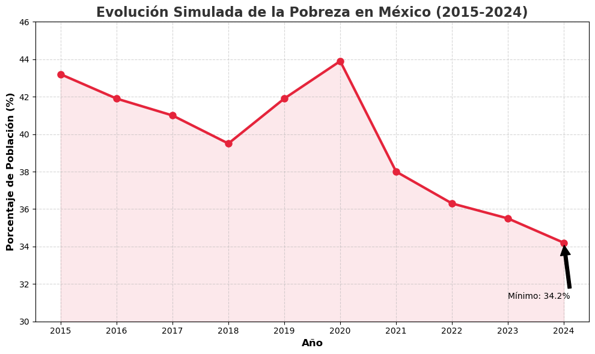
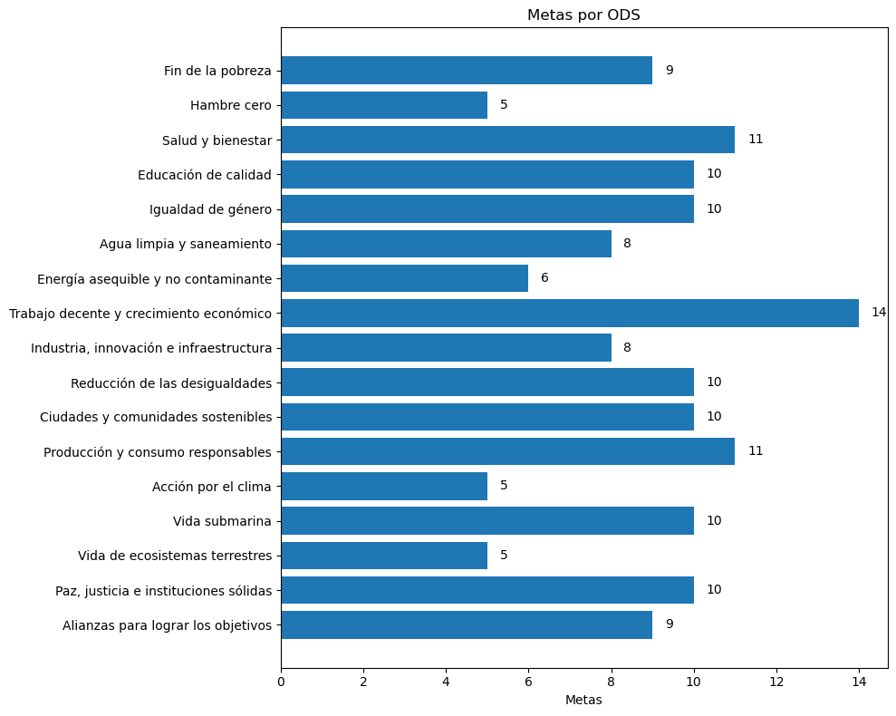

ODS PRUEVA
1. Poner fin a la pobreza en todas sus formas y en todo el mundo
Erradicar para todas las personas y en todo el mundo la pobreza extrema
Actualmente se considera que sufren pobreza extrema las personas que viven con menos de 1,25 dólares de los Estados Unidos al día.
ES IMPORTANTE POR:
META 1.1
Erradicar para todas las personas y en todo el mundo la pobreza extrema
- Objetivo breve 1
- Objetivo breve 2

FIN A LA POBREZA
HAMBRE CERO
SALUD Y BIENESTAR